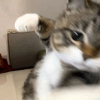

진상 할배를 만난 편붕이
진상 할배를 만난 편붕이
안때!려~
안때려~

무력이 높아 보이면 공손하다.
이게 대체 뭔장면이야ㅋㅋ
발더스게이트입니당
그래서 발더스게이트 노망난거같은 할배가 왜 주먹질로 위협하는것이냐
말하면스폰데 그래도 나중에 시간나면 해보삼
나중에 해봐야겟다
일단 화면에 나온 둘이 동맹인데
노인네가 일을 그르쳐서 젊은애가 패드립(진짜) 갈긴 상황
전말 알고 다시보니 더웃기네ㅋㅋ
뒷모습은 고타쉬인가?
아오 이 쒸벌 쉐끼가
칵~~~씨~ 안때려
자르반84세, 은박지공예가
할아버지, 봉투값 100원 주셔야 해요.
푸스로다!!
푸씨로다!
파악씨!!

게임할땐 이 장면 웃긴거 하나도 없었는데 이렇게 보니까 존나 웃기노 ㅋㅋ
1호선 단소할배